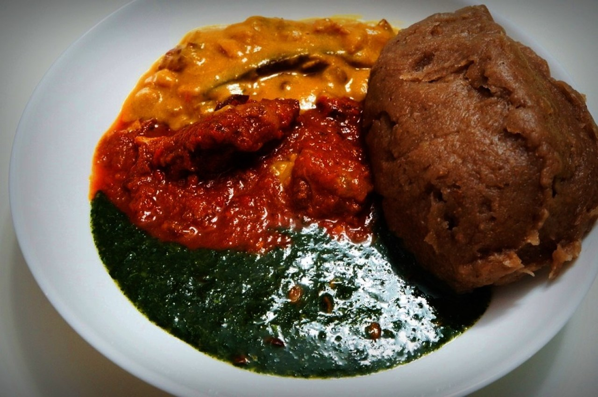

Popular Nigerian Dishes
Jollof Rice
West Africa's famous one-pot rice dish cooked in a flavorful tomato sauce.
Suya
Spicy skewered meat, a popular Nigerian street food.
Egusi Soup
A rich, hearty soup made with melon seeds and leafy vegetables.
Find Nigerian Recipes

Jollof Rice
West Africa's famous one-pot rice dish cooked in a flavorful tomato sauce.
Pounded Yam & Egusi
A classic Nigerian combination of smooth pounded yam and rich egusi soup.